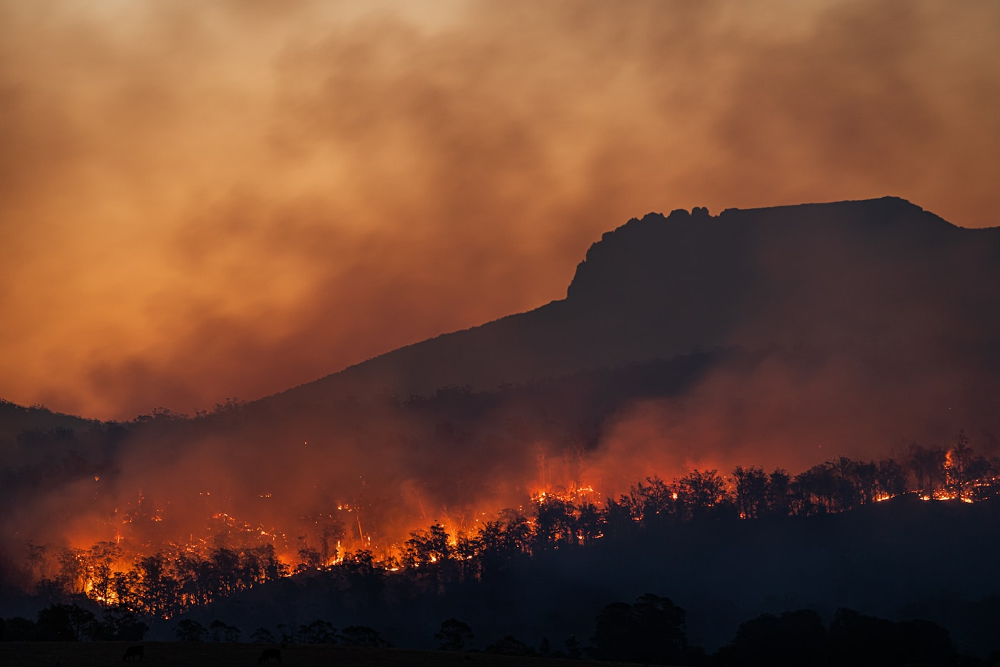

Small Hydro
A stable, site-specific renewable energy source delivering reliable baseload power from rivers and small water systems across Nigeria.
Nigeria’s Untapped Hydropower Potential
Nigeria’s small hydropower market remains one of the country’s most underdeveloped renewable energy opportunities despite significant untapped river and dam resources nationwide. Small hydro offers reliable baseload renewable power for rural electrification, mini-grids, agricultural processing, industrial clusters, and isolated communities, particularly in North-Central, Middle Belt, and Southern riverine regions.
Nigeria possesses one of Africa’s largest untapped small hydropower resources. More than 278 small hydropower sites have been identified across the country with a combined assessed capacity of approximately 734 MW. Beyond these surveyed locations, Nigeria’s total exploitable small hydropower potential is estimated at about 3,500 MW, highlighting substantial opportunities for clean energy investment and rural electrification.
Unlike solar, small hydro can provide stable 24-hour electricity generation where water resources are sufficient, making it highly attractive for mini-grids, agro-industrial processing, and rural electrification. Nigeria’s Renewable Energy Master Plan and Electricity Act 2023 support private-sector participation in renewable generation, including small hydro development.
Most projects currently range from micro-hydro systems below 100 kW to small hydro plants between 1–30 MW.
Explore Opportunities arrow_forward
~3,500 MW
Exploitable SHP Potential
Key Facts
2060
Net-zero targetNigeria's Net-Zero Target
Small hydropower is a key component of Nigeria's clean energy pathway toward net-zero emissions.
Source: Federal Republic of Nigeria, Energy Transition Plan, August 2022 (updated 2024).
~3,500 MW
Estimated SHP Potential Nationally
Over 278 identified small hydropower sites across the country with a combined assessed capacity of approximately 734 MW.
Shading: resource concentration · Pins: identified sites
Source: Sule et al. (2021), Energy Reports; corroborated by Aliyu et al. (2012).
€9 Million
Institutional ecosystemEU-Funded UNIDO Small Hydro Programme (2024–2027)
A major multilateral initiative supporting small hydropower development in Nigeria, including the SHP-DAIN network, a local turbine manufacturing programme, and the newly established Small Hydropower Center of Excellence (2026).
Source: United Nations Industrial Development Organisation (UNIDO); European Union (EU) Energy Support Programmes (2024–2027); Small Hydropower Development Network (SHP-DAIN) programme documentation.
How Investors Can Participate
Nigeria's small hydropower sector supports multiple investment pathways:
Grid-Connected Small Hydro
Projects supplying electricity to the national grid or eligible customers through transmission and distribution networks.
Embedded Generation
Projects supplying electricity directly to industrial, commercial, institutional, or distribution network customers.
Off-Grid & Mini-Grid Hydro
Isolated and interconnected systems serving rural communities, agricultural clusters, commercial facilities, and productive-use customers.
Hybrid Renewable Energy Systems
Small hydropower projects integrated with solar PV, battery storage, or other renewable energy technologies to improve reliability and energy availability.
Ease of Doing Business
Nigeria's small hydropower sector offers a compelling investment opportunity driven by abundant untapped resources, growing demand for reliable electricity, and increasing policy support for renewable energy development. With more than 277 identified small hydropower sites and an estimated technical potential of approximately 3,500 MW, the sector remains significantly underdeveloped relative to its resource base.
Small hydro projects can be deployed through multiple business models, including grid-connected generation, embedded generation, isolated mini-grids, rural electrification schemes, agricultural energy systems, and hybrid renewable energy projects combined with solar or battery storage. This flexibility enables investors to serve both on-grid and off-grid markets while addressing energy access and productive-use needs.
Nigeria's regulatory framework provides established pathways for project development through the Electricity Act 2023, NERC licensing frameworks, mini-grid regulations, environmental approval processes, and water-use permitting systems. Renewable energy investors may also benefit from fiscal incentives, including Pioneer Status tax relief, accelerated capital allowances, import-duty concessions, and other investment support measures.
Development partners and public institutions continue to support the sector through financing, technical assistance, and project preparation programmes. REA, AfDB, the World Bank, BOI, and climate-finance institutions are increasingly supporting renewable energy projects that improve energy access, rural development, and productive economic activity.
For investors seeking long-term infrastructure assets, small hydropower offers attractive fundamentals through low operating costs, long asset lifespans, predictable generation profiles, and strong alignment with Nigeria's electrification and energy-transition objectives.
Investor Advantages
- check_circleMultiple deployment models: grid-connected, embedded, mini-grid, and hybrid systems
- check_circleSupport from REA, AfDB, World Bank, BOI, and climate-finance institutions
- check_circlePioneer Status tax relief, import-duty concessions, and accelerated capital allowances
- check_circleEstablished NERC licensing pathways and water-use permitting frameworks
- check_circleLow operating costs and long asset lifespans relative to other technologies
- check_circleStable 24-hour baseload generation where water resources are sufficient
- check_circleStrong alignment with Nigeria's rural electrification and energy-transition objectives
Key Message: Small hydro offers stable baseload renewable generation, long asset lifespans, and strong alignment with Nigeria's rural electrification and energy-transition objectives.
Regulations
Applicable Laws & Policies
Small hydropower projects in Nigeria are governed through the country's electricity, renewable energy, water resources, and environmental frameworks. Together, these frameworks support renewable energy development, rural electrification, private-sector participation, environmental sustainability, and improved energy access.
Regulatory Requirements
Grid-connected projects above 1 MW generally require a NERC Generation Licence and must comply with applicable grid connection and interconnection requirements.
Mini-grid and isolated hydro projects are regulated under the NERC Mini-Grid Regulations and applicable provisions of the Electricity Act 2023.
Water abstraction and water-use permits or other approvals may be required depending on project size, location, and river-basin characteristics.
Environmental Impact Assessment (EIA) approval may be required for qualifying projects in accordance with Federal Ministry of Environment requirements.
Land acquisition, site access, and community engagement are governed by the Land Use Act 1978 and applicable state-level land administration procedures. Eligible projects may benefit from Pioneer Status Incentive (PSI), import-duty and VAT concessions on renewable energy equipment, accelerated capital allowances, Rural Investment Allowance, Investment Tax Credits, and the Economic Development Tax Incentive (EDTI).
Key Regulatory Agencies
 Federal Ministry of Power
Sets electricity sector policy, including the National Integrated Electricity Policy.
Federal Ministry of Power
Sets electricity sector policy, including the National Integrated Electricity Policy.
 Nigerian Electricity Regulatory Commission
(NERC)
Licenses generation, distribution, embedded generation and mini-grids, and sets tariffs.
Nigerian Electricity Regulatory Commission
(NERC)
Licenses generation, distribution, embedded generation and mini-grids, and sets tariffs.
 Federal Ministry of Environment
Sets environmental policy and approves Environmental Impact Assessments.
Federal Ministry of Environment
Sets environmental policy and approves Environmental Impact Assessments.
 National Environmental Standards and
Regulations Enforcement Agency (NESREA)
Enforces environmental standards and monitors compliance.
National Environmental Standards and
Regulations Enforcement Agency (NESREA)
Enforces environmental standards and monitors compliance.
 Nigerian Electricity Management Services
Agency (NEMSA)
Inspects and certifies electrical installations and equipment for safety.
Nigerian Electricity Management Services
Agency (NEMSA)
Inspects and certifies electrical installations and equipment for safety.
 Standards Organisation of Nigeria
(SON)
Sets product standards, with SONCAP for imports and MANCAP for local manufacture.
Standards Organisation of Nigeria
(SON)
Sets product standards, with SONCAP for imports and MANCAP for local manufacture.
 Transmission Company of Nigeria
(TCN)
Operates the transmission grid and handles interconnection and grid-impact studies.
Transmission Company of Nigeria
(TCN)
Operates the transmission grid and handles interconnection and grid-impact studies.
Grid-Connected Small Hydro
(where applicable)
(where applicable)
Off-Grid / Mini-Grid Small Hydro
(where applicable)
(where applicable)
(where applicable)
Technical & Safety
Small hydropower projects must comply with applicable Nigerian and international technical standards covering safety, reliability, environmental performance, and grid compatibility. Requirements may include the NERC Grid Code for grid-connected facilities, TCN interconnection and grid-impact assessment requirements, NEMSA inspection and electrical safety certification, SON product certification requirements (including SONCAP where applicable), applicable Nigerian Industrial Standards (NIS), and International Electrotechnical Commission (IEC) standards for turbines, generators, transformers, switchgear, protection systems, and control equipment.
Finance
Public Finance
Small hydro projects are eligible under REA's Rural Electrification Fund (REF) for mini-hydro and community electrification schemes. Development finance institutions such as the World Bank, AfDB, and GIZ provide concessional funding and technical assistance for feasibility studies and rural energy infrastructure. NSIA and other public-backed infrastructure vehicles may support scalable hydro assets linked to broader renewable energy portfolios.
Commercial Finance
Local banks such as Access Bank, Zenith Bank, FCMB, and Sterling Bank are gradually expanding renewable energy portfolios, though small hydro remains underfunded due to higher upfront civil works and longer payback periods. DFIs, including IFC, Africa Finance Corporation (AFC), and AfDB, remain key sources of debt and blended investment for bankable hydro projects.
Guarantees & Risk Instruments
Hydrological risk guarantees, political risk insurance, and credit enhancement structures from InfraCredit, MIGA, and DFI-backed facilities are critical to de-risk small hydro investments. Off-taker guarantees and long-term power purchase agreements (PPAs) are essential for improving bankability.
Blended Finance
Small hydro is highly dependent on blended finance structures combining REF grants, donor funding, concessional loans, and private equity. Early-stage feasibility funding is often required before projects become commercially viable due to high development and permitting costs.
Investor Outlook: Nigeria's small hydro opportunities are strongest in rural and peri-urban areas with reliable year-round water flow, particularly where mini-grids, agro-processing clusters, and community electrification demand exist. Strong site selection, seasonal water variability assessment, and off-taker reliability are critical to investment success.
Featured Investment Areas
Small hydro remains significantly underdeveloped relative to Nigeria's available resource potential, creating strong early-entry opportunities.
North-Central Nigeria and riverine southern regions offer some of the strongest long-term opportunities due to water resource availability and underserved electricity demand.
For investors seeking stable renewable baseload generation rather than intermittent supply, small hydro offers a strong long-term position in Nigeria's evolving energy market. Investors can also access project pipeline information through market intelligence platforms such as Nigeria SE4ALL, which provide information on electrification gaps, demand centres, and priority investment locations.
Visit Nigeria SE4ALL open_in_newRural Mini-Grids and Agro-Processing
North-Central Nigeria, Middle Belt, and Southern riverine regions offer some of the strongest long-term small hydro opportunities due to water resource availability and underserved electricity demand. Small hydro plants can anchor mini-grid systems that power agricultural processing clusters, rural communities, and productive-use facilities.
REA's rural electrification programmes and donor-backed rural electrification initiatives are increasing interest in small-scale hydro deployment, particularly in areas with reliable year-round water flow where mini-grids, agro-processing clusters, and community electrification demand exist.
Embedded Generation and Hybrid Systems
Small hydro projects can supply electricity directly to industrial, commercial, institutional, or distribution network customers. Hybrid hydro-solar systems with battery storage improve reliability and energy availability across on-grid and off-grid applications, enabling investors to serve both market segments while addressing productive-use energy needs.
Geographic Hotspots
High-opportunity markets exist in North-Central Nigeria, Middle Belt, and Southern riverine regions, where reliable water resources, underserved electricity demand, and rural electrification needs support strong project viability.
Useful Resources and Data
NERCwww.nerc.gov.ng
open_in_new
Federal
Ministry of Powerwww.power.gov.ng
open_in_new
account_balance
Federal
Ministry of Water Resourceswww.waterresources.gov.ng
open_in_new
NEMSAwww.nemsa.gov.ng
open_in_new
SONwww.son.gov.ng
open_in_new
NESREAwww.nesrea.gov.ng
open_in_new
account_balance
Corporate
Affairs Commission (CAC)www.cac.gov.ng
open_in_new